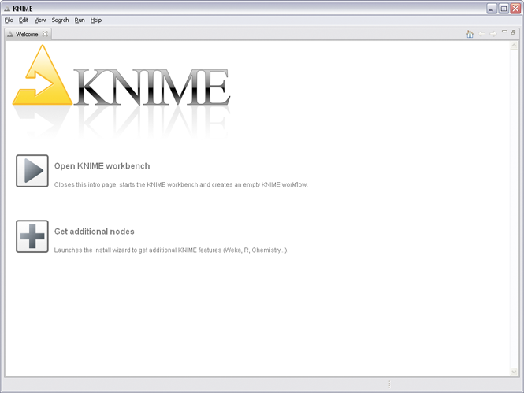
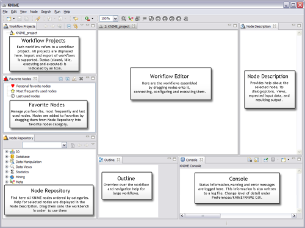
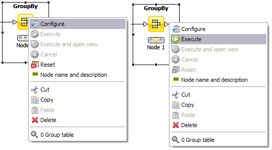
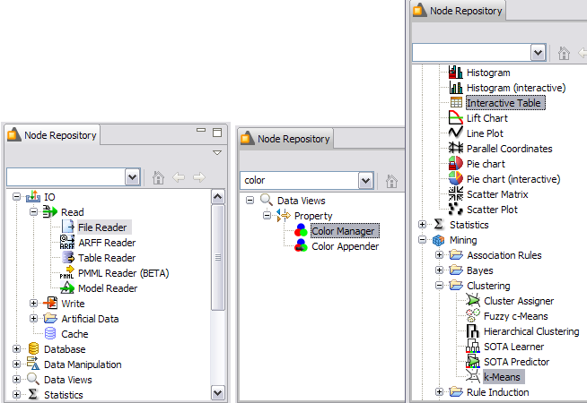
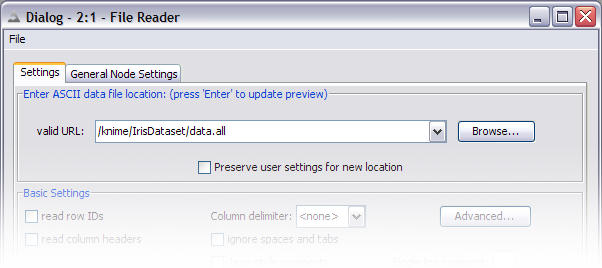
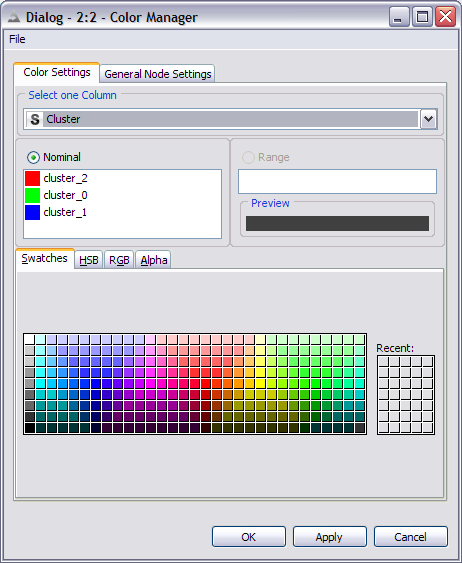

KNIME is available under a dual licensing model. A free public license based on the Aladdin Free Public License is available for non-profit use as well as for-profit internal use by commercial organizations, provided such organizations do not distribute KNIME to third parties in exchange for payment. If you wish to distribute KNIME to third parties on a paid basis, please contact us to discuss licensing arrangements.
| Linux | Windows | |
|---|---|---|
| KNIME (32bit) | ||
| KNIME (64bit) | |
KNIME Developer Version (32bit) | KNIME Developer Version (64bit) | |
When KNIME is started for the first time a welcome screen appears.

From here you can
The KNIME Workbench is organized as follows:

A workflow is built by dragging nodes from the Node Repository to the Workflow Editor and connecting them. Nodes are the basic processing units of a workflow. Each node has a number of input- and/or output ports. Data (or a model) is transfered via a connection from an out-port to the in-port of another node.
When a node is dragged to the workflow editor the status light lights up red, which means that the node has to be configured in order to be able to be executed. A node is configured by right-clicking it, choosing "Configure", and adjusting the necessary settings in the node's dialog.

When the dialog is closed by clicking the "OK" button, the node is configured and the status light changes to yellow: the node is ready to be executed. Right-click the node again shows an enabled "Execute" option; clicking it will execute the node and the result of this node will be available at the out-port. After a successful execution the stauts light of the node is green. The result(s) can be inspected by exploring the out-port view(s): the last entries in the context menu open them.
Ports on the left are input ports, where the data from the out-port of the predecessor node is provided. Ports on the right are out-ports. The result of the node's operation on the data is provided at the out-port to successor nodes. A tooltip provides information about the output of the node, further information can be found in the node description. Nodes are typed such that only ports of the same type can be connected.
KNIME is uninstalled from your system by simply deleting the installation directory. By default the workspace is also in this directory. If you have chosen a different location for the workspace be sure to delete this directory as well.
We now want to take you step-by-step through the process of building a small, simple workflow: we read in data from an ASCII file, assign color to it, cluster the data and display the data in a table and a scatter plot. After we execute this flow we will examine the data model that has been built. We assume you have just started KNIME with an empty workflow.
In the Node Repository expand the "IO" and the contained "Read" category as depicted below (left picture) and drag&drop the File Reader icon to the Workflow Editor window.

The next node for now will be the k-Means clustering algorithm. Expand the "Mining" category followed by the "Clustering" category, and then drag the K-Means node to the flow (picture on the right).
In the search box of the Node Repository enter "color" and press Enter. This limits the nodes shown to the ones with "color" in their name (see figure above in the middle). Drag the Color Manger node to the workflow (this node will define the color in the data views later). To see all nodes in the repository again, press the ESC or Backspace key in the search field of the Node Repository. Now, drag the Interactive Table and the Scatter Plot from the "Data Views" category to the Workflow Editor and position it to the right of the Color Manager node.
Now you need to connect the nodes in order to get the data flowing. Click an output port and drag the connection to an appropriate input port. Complete the flow as pictured below:

Your nodes will not show a green status, as long as they are not configured and executed.
Fully connected nodes with a red status icon need to be configured. Start with the File Reader, right-click it and select "Configure" from the menu. Navigate to the "IrisDataSet" directory located in the KNIME installation directory. Select the data.all file from this location. The File Reader's preview table shows a sample of the data.

Click OK to close the dialog of the File Reader node. Once
the node has been configured correctly, it switches to yellow (meaning
ready for execution). After that, the K-Means node immediately
turns yellow, as its default settings are applied. To be sure, that the
default settings fit your needs, open the dialog and inspect the default
settings.
In order to configure the Color Manager node you must first
execute the K-Means node. After execution all nominal values and
the ranges of all attributes are known: this meta information is
propagated to the successor nodes. The Color Manager needs this
data before it can be configured. Once the K-Means node is
executed, open the configuration dialog of the Color Manger node.

Now execute the Scatter Plot node: the workbench executes all predecessor nodes for you. In a larger, more complex flow you could select multiple nodes and trigger execution for all of them. The workflow manager executes the nodes as needed, if possible in parallel.
In order to examine the data and the results, open the nodes' views. In our example, the K-Means, the Interactive Table and the Scatter Plot have views. Open them from the nodes' context menus.
Select some points in the scatter plot and choose "Hilite Selected" from the "Hilite" menu. The hilited points are marked with an orange border. You will also see the hilited points in the table view. The propagation of the hilite status works for all views in all branches of the flow displaying the same data.

This was just a very simple example to get you started. There is a lot more to discover. Play with it! We tried to keep it simple and intuitive. It would be great to receive your feedback and find out what you liked and what you did not like; things you find awkward or things that did not seem to work.